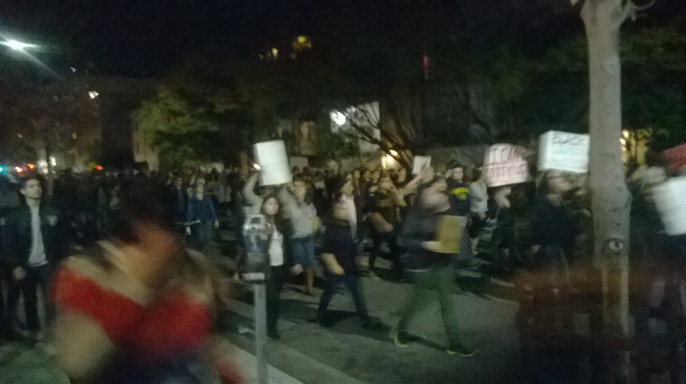
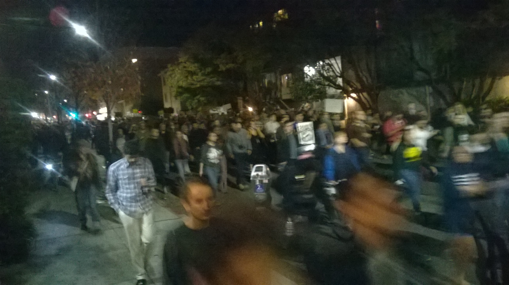
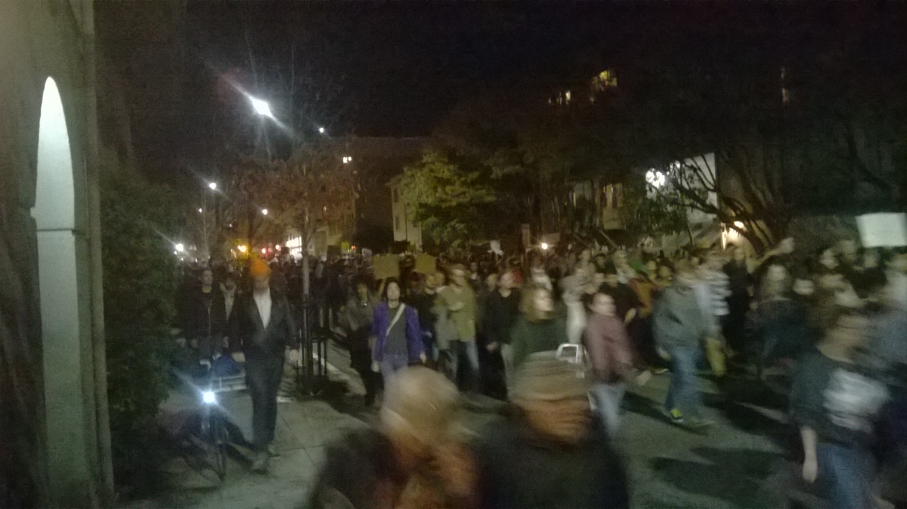
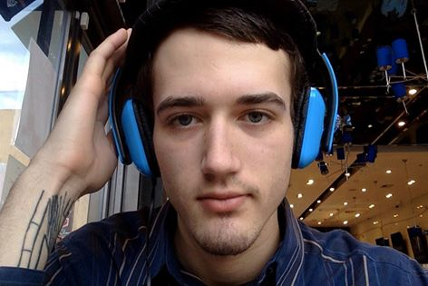
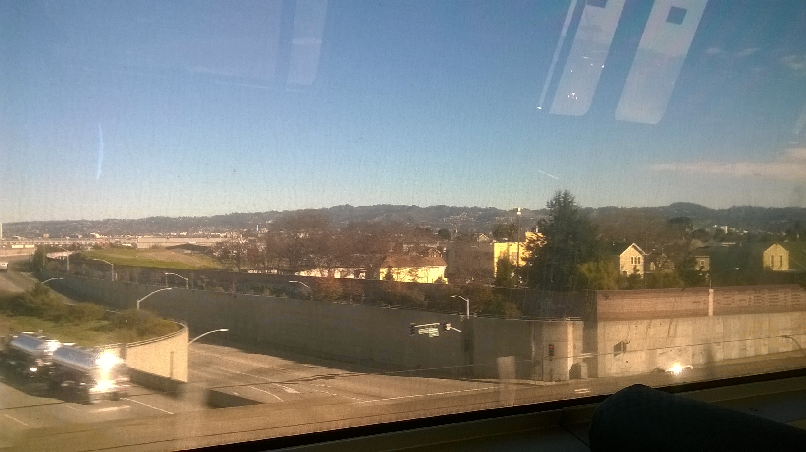
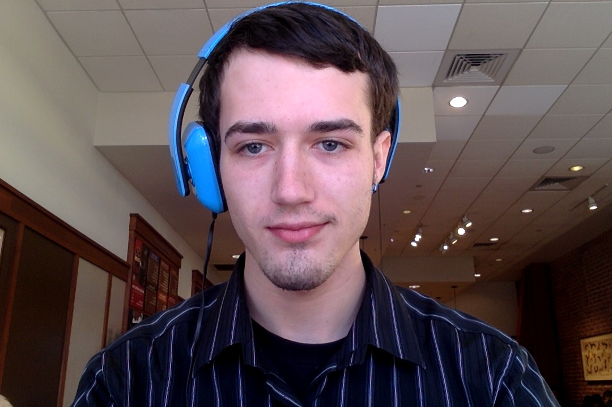

When i arrived in Berkeley for the first time on Decemeber 9th, it was a mildly cold day, but nothing compared to Ohio's cold. *Shutters at the thought of Ohio's temperature at that current moment* I got off at the Ashby BART station, and started my journey of making it in this city by going up and down Shattuck Ave. and filling out applications.

As i was leaving the Burgermeister on Shattuck, (Which i later got a job at actually. Whatever you do, dont EVER work there. The manager and owners are absolute ass holes, and dont care about their employees or customers.), there was a HUGE crowd of people that came down the street. Me being fresh out of Ohio, i had absolutely NO idea what was going on whatsoever. I was a tad scared, but also intrigued. I was then dragged by the crowd a little ways down Shattuck, then down to Martin Luther King Jr. Way before i was able to part the Berkeley-people-sea, like some sort of modern Moses. Why i took pictures while mildly panicing, i'll never remember, but i'm glad i did.



As i started to begin work at this horrible job, flipping burgers, and listening to the manager threatening to fire me over not knowing the differece between ceaser and blu cheese dressing, or kicking a box out of my way while i lug around 3 cases of fries, i started to realize that this is ridiculous. Nobody needs this, and my co-workers are absolutely fine with everything this ass hole says to me and them. While i understand he's the manager, and he's the one employing us, he should be encouraging us to work harder, say we're doing a good job, not that im a pussy for using a knife to cut open a box. My father and step-mother always told me that to earn respect, you ust first give respect. Why in the world im sitting here taking this from a guy who took a career in flipping burgers, ill never know. Maybe its for the money. Maybe it's to try and get myself off the ground, to stop living out of a buddies' house and to do my own thing. Either way, this horrible job helps me to realize i'm destined for greater things, not flipping burgers. Im a programmer, a musician, and a whole assortment of other things that im extremely proud of. Howwever, burger flipping is not one of the things that im proud of that i know how to do. So now i spend all my free time, sitting in coffee shops, programming a new site, updating my portfolio, trying to make sure i push code to GitHub every day, no matter what, because i cant work a dead end job anymore. Its time to give my all, to give my best, even if my best isnt good enough for anyone, its good enough for me, and thats all that matters. Listen kids, never let someone, like my piece of shit burger-flipping manager who thinks he's king of the world, tell you that your not good enough. You ARE good enough. Everyone has something they are good at, you just have to find it, and turn it into a career, like my dad whos a freelance programmer. If anyone can vouch for being happy with what you do, it's definetly him. Dont let anyone make you feel lesser, for you are a human being, you are an equal to everyone else, no mater who that person is, wheather its my PoS manager, the President Of The United States, or even the homeless guy on the street. Everyone has potential, you just have to take the opportunites that have been presented to you.

At some point, i decided that since i have money, ill go to San Fransisco for the first time by myself. I happend to choose the ABSOLUTE worst day to go, considering the amount of wind, and how cold it was (for San Fransisco, i mean.) But either way, i had a great time, even if i didnt go far. I met a nice girl on the train to SF. I dont remember her name, and i cant for the life of me tell you what was so great about her, but she was fantastic. Gorgeous, dressed nice, had goals in life, really a well-rounded girl who knew what she wanted in life. Who wouldnt want that? Well thats not the point im trying to get across, but even for this short 45 minute encounter we had, ill remember this girl for the rest of my life. She was in my exact position, just moved here about a month ago, was dumped by her boyfriend back where she was from, and came to SF on a whim, to find her footing, to follow her dreams and take off. Thats exactly where i'm at as i type this! It was one a new feeling for me, one that i had never felt before. It was like looking into a mirror, but it wasnt me looking back at me, it was a person just like me, keeping to themselves, just striving for the big dream, to be happy, to love your work, and live happily doing it. She really was quite an insperation for me, not in the sense of she presented a form of insperation like Lars Ulrich, or Mark Zuckerburg, but in the sense that there IS someone else out there just like me. Coming out to a big city like this can be extremely stressful, the feeling of loneliness is next to unbearable, but theres so many people walking around, its like, how can one feel so lonely, but be surrounded by thousands of people? Its such an odd feeling. But in this moment, in this short little 45 minute interaction, i didnt feel so lonely. I didnt feel so out of place, and i didnt feel like i couldnt do it. I felt at peace with myself. There IS someone out there just like me, and it was an eye opener, and it really made me think that i can do it. Theres others out here, trying to make it big and love their life, just like me. It really is a fantastic feeling. Wherever or whenever you are, Marissa, i thank you greatly. We only talked for a short time, but in that time, you changed my life.

As i sit here, writing code, looking like a general coffee shop "HEY LOOK AT ME IM A PROGRAMMER" douchebag, there a guy on my left, who's also a programmer, and a cute girl to the right, who was kind enough to watch my computer for me while i went out and smoked, im kind of sitting here like "Wow! A potential friend, and a potential lady freind. Whats stopping me from talking to these people?" Well ill tell you, and its called social anxiety, and it freaking sucks. My dad told me once that you need to break these sorts of boundries, and when the oppourtunity is presented to you, you should take it. Unfortunetly for me, i dont feel i have the capacity to take charge over myself, and take oppourtunites such as this. Why? Social anxiety. Why do i have this ailment? Is it because of where i grew up? The small town of Swanton where everyone knows everybody? Or is it because of HOW i grew up? Im not sure, maybe i should see a doctor of sorts. Or maybe i should just get over myself, and talk to these people, maybe ill start to understand the baisc functionallity of human beings that we call making friends and meeting people. You know what? Fuck it, im gonna give it a try.
